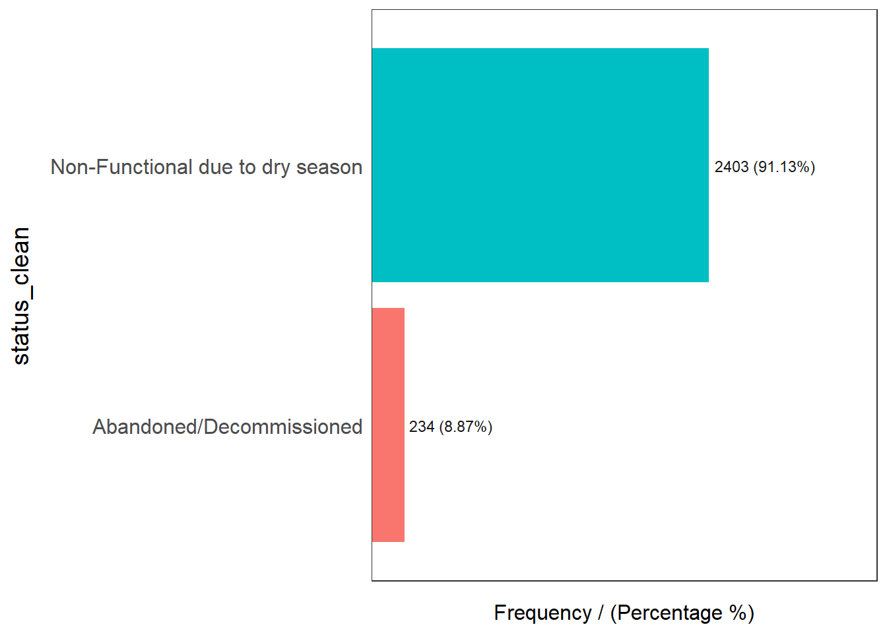
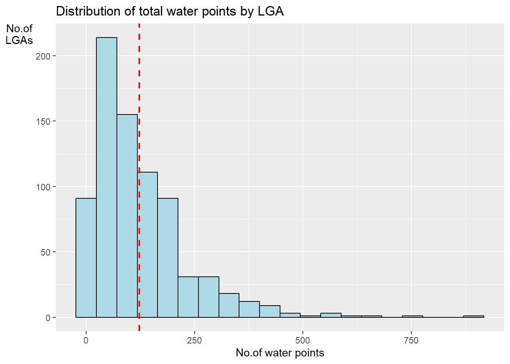

pacman::p_load(sf,tidyverse,funModeling)
#tidyverse:data handling, tidy up
#funModeling: package design for us to do EDAWeek3_Inclass
Load Necessary R packages
Handling Geospatial Data
Import the geo boundaries dataset
geoNGA <- st_read("Data/geospatial/",layer="geoBoundaries-NGA-ADM2") %>%
st_transform(crs=26392)Reading layer `geoBoundaries-NGA-ADM2' from data source
`C:\Quanfang777\IS415-GAA\WeeklyExercise\week3\Week3_Inclass\Data\geospatial'
using driver `ESRI Shapefile'
Simple feature collection with 774 features and 6 fields
Geometry type: MULTIPOLYGON
Dimension: XY
Bounding box: xmin: 2.668534 ymin: 4.273007 xmax: 14.67882 ymax: 13.89442
Geodetic CRS: WGS 84#read data in use st_read, if it is a shapefile, exclude the extention,look at the prj format, it is WGS 84, so we need to transfer it into Nigeria CRS.wp_nga <- read_csv("Data/aspatial/WPdx.csv")%>% filter(`#clean_country_name`=="Nigeria")Warning: One or more parsing issues, call `problems()` on your data frame for details,
e.g.:
dat <- vroom(...)
problems(dat)Rows: 406566 Columns: 70
── Column specification ────────────────────────────────────────────────────────
Delimiter: ","
chr (43): #source, #report_date, #status_id, #water_source_clean, #water_sou...
dbl (23): row_id, #lat_deg, #lon_deg, #install_year, #fecal_coliform_value, ...
lgl (4): #rehab_year, #rehabilitator, is_urban, latest_record
ℹ Use `spec()` to retrieve the full column specification for this data.
ℹ Specify the column types or set `show_col_types = FALSE` to quiet this message.view the data and see if we can keep the data size small -> we only need #status_clean
view(wp_nga)Converting water point data into sf point features (notice we have a variable of New Geo referenced column, which provides us WKT, well-known text which allows us to store coordinate information in a single ( )
wp_nga$Geometry = st_as_sfc(wp_nga$'New Georeferenced Column')
wp_nga# A tibble: 95,008 × 71
row_id `#source` #lat_…¹ #lon_…² #repo…³ #stat…⁴ #wate…⁵ #wate…⁶ #wate…⁷
<dbl> <chr> <dbl> <dbl> <chr> <chr> <chr> <chr> <chr>
1 429068 GRID3 7.98 5.12 08/29/… Unknown <NA> <NA> Tapsta…
2 222071 Federal Minis… 6.96 3.60 08/16/… Yes Boreho… Well Mechan…
3 160612 WaterAid 6.49 7.93 12/04/… Yes Boreho… Well Hand P…
4 160669 WaterAid 6.73 7.65 12/04/… Yes Boreho… Well <NA>
5 160642 WaterAid 6.78 7.66 12/04/… Yes Boreho… Well Hand P…
6 160628 WaterAid 6.96 7.78 12/04/… Yes Boreho… Well Hand P…
7 160632 WaterAid 7.02 7.84 12/04/… Yes Boreho… Well Hand P…
8 642747 Living Water … 7.33 8.98 10/03/… Yes Boreho… Well Mechan…
9 642456 Living Water … 7.17 9.11 10/03/… Yes Boreho… Well Hand P…
10 641347 Living Water … 7.20 9.22 03/28/… Yes Boreho… Well Hand P…
# … with 94,998 more rows, 62 more variables: `#water_tech_category` <chr>,
# `#facility_type` <chr>, `#clean_country_name` <chr>, `#clean_adm1` <chr>,
# `#clean_adm2` <chr>, `#clean_adm3` <chr>, `#clean_adm4` <chr>,
# `#install_year` <dbl>, `#installer` <chr>, `#rehab_year` <lgl>,
# `#rehabilitator` <lgl>, `#management_clean` <chr>, `#status_clean` <chr>,
# `#pay` <chr>, `#fecal_coliform_presence` <chr>,
# `#fecal_coliform_value` <dbl>, `#subjective_quality` <chr>, …As aspatial file don’t have crs information, so we need to assign it
When handling aspatial data, first, understand the data type, then assign crs, if the original file is wgs84, then assign 4326 to it
wp_sf <- st_sf(wp_nga,crs=4326)
wp_sfSimple feature collection with 95008 features and 70 fields
Geometry type: POINT
Dimension: XY
Bounding box: xmin: 2.707441 ymin: 4.301812 xmax: 14.21828 ymax: 13.86568
Geodetic CRS: WGS 84
# A tibble: 95,008 × 71
row_id `#source` #lat_…¹ #lon_…² #repo…³ #stat…⁴ #wate…⁵ #wate…⁶ #wate…⁷
* <dbl> <chr> <dbl> <dbl> <chr> <chr> <chr> <chr> <chr>
1 429068 GRID3 7.98 5.12 08/29/… Unknown <NA> <NA> Tapsta…
2 222071 Federal Minis… 6.96 3.60 08/16/… Yes Boreho… Well Mechan…
3 160612 WaterAid 6.49 7.93 12/04/… Yes Boreho… Well Hand P…
4 160669 WaterAid 6.73 7.65 12/04/… Yes Boreho… Well <NA>
5 160642 WaterAid 6.78 7.66 12/04/… Yes Boreho… Well Hand P…
6 160628 WaterAid 6.96 7.78 12/04/… Yes Boreho… Well Hand P…
7 160632 WaterAid 7.02 7.84 12/04/… Yes Boreho… Well Hand P…
8 642747 Living Water … 7.33 8.98 10/03/… Yes Boreho… Well Mechan…
9 642456 Living Water … 7.17 9.11 10/03/… Yes Boreho… Well Hand P…
10 641347 Living Water … 7.20 9.22 03/28/… Yes Boreho… Well Hand P…
# … with 94,998 more rows, 62 more variables: `#water_tech_category` <chr>,
# `#facility_type` <chr>, `#clean_country_name` <chr>, `#clean_adm1` <chr>,
# `#clean_adm2` <chr>, `#clean_adm3` <chr>, `#clean_adm4` <chr>,
# `#install_year` <dbl>, `#installer` <chr>, `#rehab_year` <lgl>,
# `#rehabilitator` <lgl>, `#management_clean` <chr>, `#status_clean` <chr>,
# `#pay` <chr>, `#fecal_coliform_presence` <chr>,
# `#fecal_coliform_value` <dbl>, `#subjective_quality` <chr>, …Then transform to Nigeria CRS!
wp_sf <- wp_sf %>% st_transform(crs=26392)Import the NGA dataset
NGA <- st_read("data/geospatial/",
layer = "nga_admbnda_adm2_osgof_20190417") %>%
st_transform(crs = 26392)Reading layer `nga_admbnda_adm2_osgof_20190417' from data source
`C:\Quanfang777\IS415-GAA\WeeklyExercise\week3\Week3_Inclass\Data\geospatial'
using driver `ESRI Shapefile'
Simple feature collection with 774 features and 16 fields
Geometry type: MULTIPOLYGON
Dimension: XY
Bounding box: xmin: 2.668534 ymin: 4.273007 xmax: 14.67882 ymax: 13.89442
Geodetic CRS: WGS 84Data Cleaning: Excluding redundant fileds
NGA <- NGA%>% select(c(3:4,8:9))
#select for column, filter for rowChecking for duplicate name
NGA$ADM2_EN[duplicated(NGA$ADM22_EN)==TRUE]character(0)# Get all the duplicated LGA names
duplicated_LGA <- NGA$ADM2_EN[duplicated(NGA$ADM2_EN)==TRUE]
# Get all the indices with names that are included in the duplicated LGA names
duplicated_indices <- which(NGA$ADM2_EN %in% duplicated_LGA)
# For every index in the duplicated_indices, concatenate the two columns with a comma
for (ind in duplicated_indices) {
NGA$ADM2_EN[ind] <- paste(NGA$ADM2_EN[ind], NGA$ADM1_EN[ind], sep=", ")
}freq(data=wp_sf,input=
'#status_clean')Warning: The `<scale>` argument of `guides()` cannot be `FALSE`. Use "none" instead as
of ggplot2 3.3.4.
ℹ The deprecated feature was likely used in the funModeling package.
Please report the issue at <https://github.com/pablo14/funModeling/issues>.
#status_clean frequency percentage cumulative_perc
1 Functional 45883 48.29 48.29
2 Non-Functional 29385 30.93 79.22
3 <NA> 10656 11.22 90.44
4 Functional but needs repair 4579 4.82 95.26
5 Non-Functional due to dry season 2403 2.53 97.79
6 Functional but not in use 1686 1.77 99.56
7 Abandoned/Decommissioned 234 0.25 99.81
8 Abandoned 175 0.18 99.99
9 Non functional due to dry season 7 0.01 100.00replace all the record of NA to ‘unknown’
wp_sf_nga <- wp_sf %>% rename(status_clean='#status_clean')%>% select (status_clean) %>% mutate(status_clean=replace_na(status_clean,"unknown"))Extract Water Point Data (For Functional, Non-functional, Unknown respectively)
wp_functional <- wp_sf_nga %>%
filter(status_clean %in%
c("Functional","Functional but not in use","Functional but needs repair"))wp_nonfunctional<- wp_sf_nga %>% filter(status_clean %in% c("Abandoned/Decommissioned","Aboundoned","Non-Functional due to dry season","Non-Fuctional","Non Functional due to dry season"))wp_unknown<- wp_sf_nga %>% filter(status_clean == 'unknown')Perform a quick EDA
freq(data = wp_functional,
input = 'status_clean')
status_clean frequency percentage cumulative_perc
1 Functional 45883 87.99 87.99
2 Functional but needs repair 4579 8.78 96.77
3 Functional but not in use 1686 3.23 100.00freq(data = wp_nonfunctional,
input = 'status_clean')
status_clean frequency percentage cumulative_perc
1 Non-Functional due to dry season 2403 91.13 91.13
2 Abandoned/Decommissioned 234 8.87 100.00freq(data = wp_unknown,
input = 'status_clean')
status_clean frequency percentage cumulative_perc
1 unknown 10656 100 100Find out the number of total, functional, nonfunctional and unknown water points in each LGA
NGA_wp <- NGA %>%
mutate(`total_wp` = lengths(
st_intersects(NGA, wp_sf_nga))) %>%
mutate(`wp_functional` = lengths(
st_intersects(NGA, wp_functional))) %>%
mutate(`wp_nonfunctional` = lengths(
st_intersects(NGA, wp_nonfunctional))) %>%
mutate(`wp_unknown` = lengths(
st_intersects(NGA, wp_unknown)))Visualizing attributes
ggplot(data=NGA_wp,aes(x=total_wp))+geom_histogram(bins=20,color="black",fill="light blue") + geom_vline(aes(xintercept=mean(total_wp,na.rm=T)),color="red",linetype="dashed",size=0.8)+ggtitle("Distribution of total water points by LGA")+xlab("No.of water points")+ylab("No.of\nLGAs")+theme(axis.title.y=element_text(angle = 0))Warning: Using `size` aesthetic for lines was deprecated in ggplot2 3.4.0.
ℹ Please use `linewidth` instead.
Save the sf dataframe into rds format
write_rds(NGA_wp,"Data/rds/NGA_wp.rds")